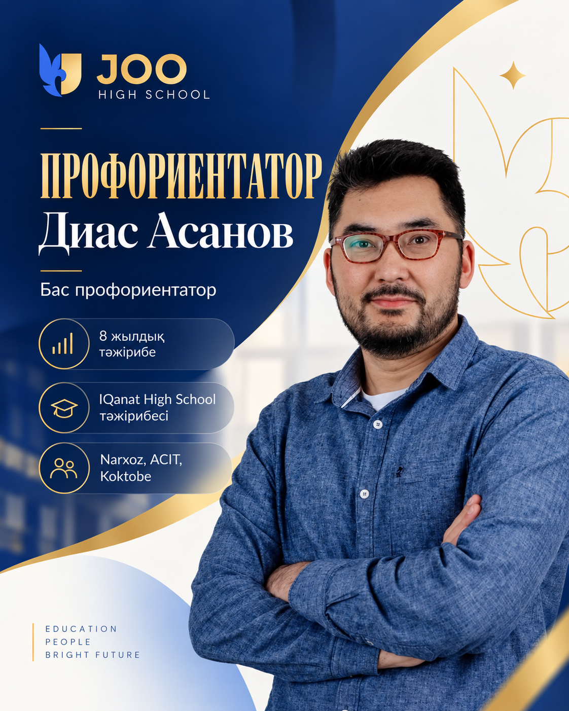
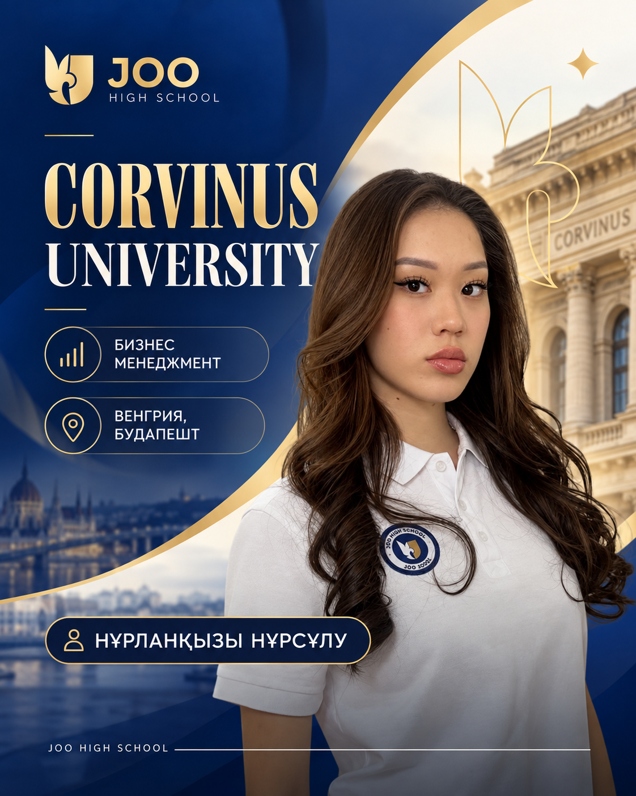

JOO AUEZOV / CAREER GUIDANCE
Профориентация болашаққа жол
JOO Auezov-та профориентация — жай ғана «қай мамандықты таңдаймын?» деген сұрақ емес. Бұл оқушының қызығушылығын, күшті жақтарын, пәндік бағытын, университеттік мақсатын және келесі нақты қадамдарын жүйелі түрде жинақтайтын бөлек экожүйе.
JOO AUEZOV · STUDENT PATHWAYS
DISCOVER↗EXPLORE↗DECIDE
CAREER PATH / 7—11ӨЗ ЖОЛЫҢДЫ
ТАП.01 / 02 / 03
ПӘН ТАҢДАУУНИВЕРСИТЕТТАП.01 / 02 / 03
Оқушыға лайық жолды табу 7–11 СЫНЫП / COUNSELLING / UNIVERSITY PATH
01 / GUIDANCE TEAM
Оқушыға жол көрсететіндер
Оқушының жеке қызығушылықтары мен мүмкіндіктеріне сай мамандық таңдауға бағыттайтын мамандар.

JOO HIGH SCHOOLS / LEAD CAREER COUNSELOR
Диас Асанов Бас профориентаторы
JOO High Schools жүйесіндегі профориентация бағытын жүргізетін маман. Берілген постердегі негізгі мәліметтер қайта теріліп, оқуға ыңғайлы форматқа келтірілді.
- Білім саласында 8 жылдық тәжірибесі бар.
- IQanat High School мектебінде бас профориентатор қызметін атқарған.
- Narxoz университеті, ACIT колледжі және Koktobe мектебінде креативті педагогикалық идеяларды енгізуші.
JOO High Schools желісінің профориентация бағыты
02 / HOW THE JOURNEY WORKS
Сыныпқа сай жүретін маршрут
7–11 сыныпта профориентация кезең-кезеңімен дамиды: өзін тану, пән таңдау, портфолио және университетке дайындық.
Профориентация қалай жүреді? · #1
7–8 сынып
Бұл сыныптағы оқушылар өзінің нені ұнатып/ұнатпайтынын анықтап, жалпы әлемде қандай жұмыс салалары бар екенін біліп, өзін таниды.
CAREER ROADMAP / 7-8
DISCOVER
01020304
Қызығушылық пен қабілетті зерттеуSTEP BY STEP · JOO HIGH SCHOOLПрофориентация қалай жүреді? · #2
9-сынып
Бұл сыныптағы оқушылар мамандықтар туралы біліп, өздерінің күшті жақтарын анықтап, келесі жылға таңдау пәндерін нақтылайды.
CAREER ROADMAP / 9
FOCUS
01020304
Таңдау пәндері мен болашақ бағытын нақтылауSTEP BY STEP · JOO HIGH SCHOOLПрофориентация қалай жүреді? · #3
10-сынып
Бұл сыныптағы оқушылар таңдау пәндерін нақтылап, жан-жақты дамып, университеттерді зерттеп, жеке даму жоспарларын жасайды.
CAREER ROADMAP / 10
DEVELOP
01020304
Портфолио, зерттеу және университеттерSTEP BY STEP · JOO HIGH SCHOOLПрофориентация қалай жүреді? · #4
11-сынып
Бұл сыныптағы оқушылар 4 мамандық пен 4 университетті таңдап, толық ақпарат алып, ҰБТ ережелерімен танысады.
CAREER ROADMAP / 11
LAUNCH
01020304
Мамандық, университет және грант жоспарыSTEP BY STEP · JOO HIGH SCHOOL03 / THREE-YEAR TRACK RECORD
Үш жылдағы жүйелі жұмыс
Бұл көрсеткіштер JOO High Schools желісінің профориентация материалдары бойынша берілген. Олар Auezov филиалының жеке статистикасы ретінде көрсетілмейді.
✓Оқушылар әлемдік TOP университеттердің өкілдерімен кездесті.
✓2200 түлекке профориентациялық консультация берілді.
✓Қазақстандағы 10+ университетке экскурсия жасалынды.
✓«Яндекс», «Самал», «CADEX Халықаралық Стоматология көрмесі» және тағы басқа кәсіпорындар мен іс-шараларға экскурсия ұйымдастырылды.
✓Әртүрлі мамандық эксперттерімен 30-дан астам «Мамандықпен танысу» семинары өтті.
✓Берілген жалпы JOO High School материалында 98% университетке түсу және 6% шетелге түсу көрсеткіші аталған (Auezov филиалының жеке статистикасы ретінде берілмейді).
NETWORK / 3-YEAR IMPACT2 200+
Кәсіби бағдар бойынша кеңес алған түлектер
30+SEMINARS10+UNI VISITS
Бұл көрсеткіштер JOO High Schools желісіне қатысты.04 / INTERNATIONAL TEST PARTNERS
Серіктестіктер және мүмкіндіктер
Ағылшын тілі емтихандарына дайындық пен халықаралық мүмкіндіктер туралы ұсынылған деректер.
INTERNATIONAL ENGLISHidp IELTS
ACCESS / PREPARATION / SUPPORTJOO HIGH SCHOOLS · LANGUAGE PATH
IDP IELTS Ресми серіктесі
- Серіктестік арқылы біздің оқушыларымыз IDP IELTS-тен арнайы приоритетті қызмет ала алады.
- Нақты IELTS тапсыруға жеңілдіктер қарастырылады.
- Пробный IELTS тесттер тапсыра алады.
- Компьютерлік IELTS таныстыру кездесулерін өтеді.
- Дайындықтың қосымша курстарын ала алады.
- IELTS орталығына профориентациялық экскурсия және стажировка мүмкіндігі бар.
- Тек оқушыларға ғана емес, мұғалімдерге арналған IELTS тренингтері өткізіледі.
LANGUAGE QUALIFICATIONSTOEFL®
↗
ENGLISH FOR WHAT'S NEXTiBT · ITP / TEST PATHWAYSTOEFL Ресми серіктесі
- TOEFL ITP/IBT — ҰБТ-да IELTS сияқты ресми түрде қабылданатын тест.
- Мектебімізде тестті ыңғайлы форматта тапсыру мүмкіндігі бар.
- JOO High School оқушыларына IBT тапсыру құнына 30 долларға дейінгі жеңілдік қарастырылады.
- Халықаралық сертификат оқу мүмкіндіктерін кеңейтеді.
05 / GLOBAL DESTINATIONS
90+ оқушы 11 елде
Берілген мәліметтер бойынша JOO High Schools желісінің 90-нан астам оқушысы 11 елде оқуын жалғастырған. Бұл тек Auezov филиалының статистикасы емес.
Шетелге оқу — нақты траектория
Берілген JOO High School желісіне қатысты материал бойынша 90-нан астам оқушы шетелде оқу мүмкіндігіне ие болған. Бұл тек сан емес, профориентациядан бастап тілдік дайындық, портфолио және құжат тапсыруға дейінгі ұзақ жолдың нәтижесі.
ТүркияҚытайЧехияМалайзияПольшаБіріккен Араб ӘмірлігіАҚШКипрЛитваСингапурИспания
GLOBAL / OUTCOMES11COUNTRIES
90+ STUDENTS ABROAD
06 / STUDENT STORIES
Профильден университетке дейін
Жарияланған екі оқушы мысалы оқу бағыты мен университет таңдаудың нақты нәтижесін көрсетеді.

08 / NEXT STEP
Өз траекторияңды бүгіннен баста.
Өз қызығушылығыңды зерттеп, мамандықтармен танысып, алдыңдағы нақты мақсаттарды мектеп мамандарымен бірге талқыла.